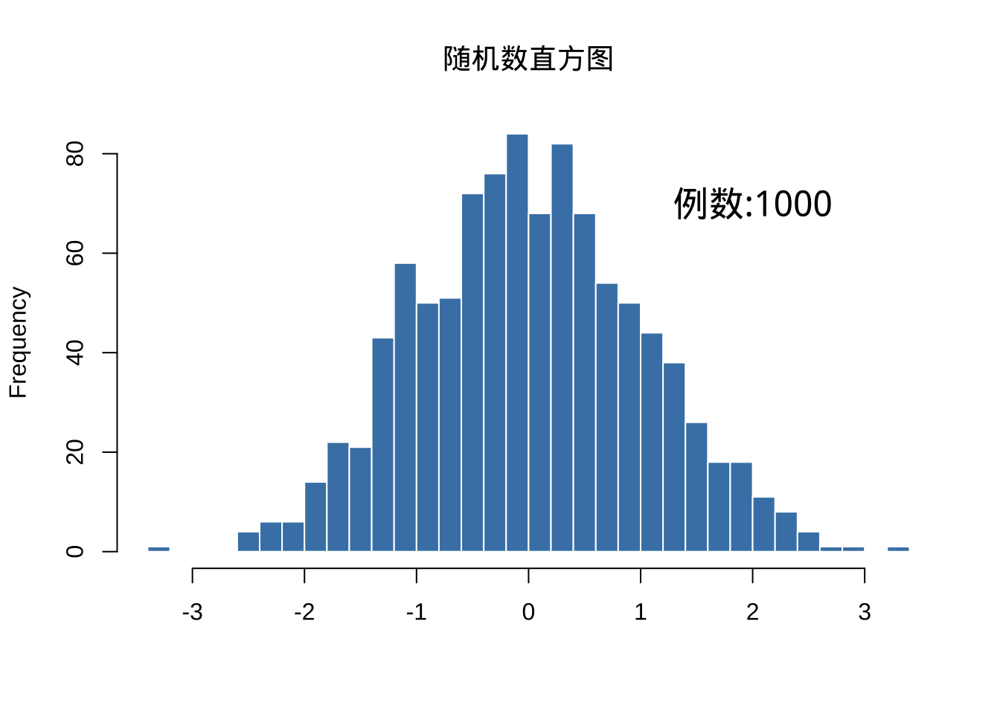

当你在MAC OS是使用ggplot2作图时，可能会遇到无法显示中文的问题，有中文的地方均显示为一个方框，这个让人多少有点难受。下面我们就整理一下解决此问题的方法，并汇总如下。
1 使用showtext包加载中文字体
首先，安装showtext包
加载showtext包，并显示当前环境中可用的字体
Loading required package: sysfontsLoading required package: showtextdb[1] "sans" "serif" "mono" "wqy-microhei"Google上有很多可以用的免费字体，showtext可以加载google字体
下面我们可以再次查看一下当前环境中的字体有哪些，我们就可以使用加载的中文字体来作图了。
[1] "sans" "serif" "mono" "wqy-microhei"hist(rnorm(1000), breaks = 30, col = "steelblue", border = "white",
main = "随机数直方图", xlab = "", ylab = "Frequency")
showtext_begin()
text(2, 70, "例数:1000", family = "wqy-microhei", cex = 1.5)
打开Mac OS的terminal终端，输入如下命令